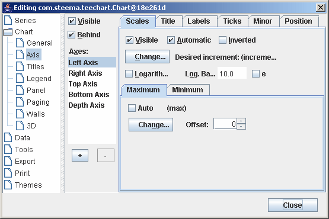
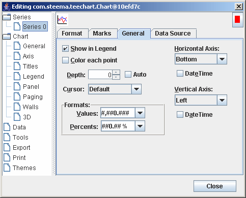

이전 | 다음
|
|
목차 이전 | 다음 |
TeeChart Pro는 자동적으로 모든 축이 라벨링 되도록 정의되어 있으며 당신의 어떠한 특정 요구 사항이라도 매우 융통성 있게 맞추어줍니다. Teechart Pro는 진정한 다중 축을 제공합니다. 이것은 디자인시나 실행시에 축 정의를 용이와 편리성을 제공합니다. 좀더 많은 정보를 얻기 위해서는 이 자습서의 해당 섹션을 보기 바랍니다.
| 목차 |
축 제어 - 키 영역
스케일(Scales) 부가적인 축(Additional Axes)축 복사(Copying axes)다중 축(Multiple Custom axes) (Pro version only) |
축 스케일은 당신의 차트에 시리즈 데이터를 추가하면 자동적으로 세팅이 됩니다. Axis 속성을 사용하면 디자인 시나 실행시에 기본값을 바꿀 수 있습니다.
 |
|
Automatic s은 당신의 데이터에 적합한 최상의 축 스케일 범위를 선택합니다. 만약 Automatic을 끈다면 스케일 섹션은 옵션에서 회색이 없어지면서 축 값을 바꿀 수 있게 됩니다. 페이지 왼쪽에 있는 축 목록으로부터 당신이 설정하기를 원하는 축을 선택하는 것을 기억하시는 것이 중요합니다 .
차트에 라인 시리즈를 추가하고 아래 코드를 가진 Command 버튼을 추가합니다. :
tChart1.removeAllSeries(); tChart1.addSeries(new Line()).fillSampleValues(40);
버튼으로 코드를 실행할때 랜덤한 40개 값과 함께 선시리즈에 그릴수 있습니다. 아마 여기 구성된 축 스케일값은 Maximum 과 Minimum 값으로 형성될겁니다.
tChart1.getAxes().getBottom().setAutomatic(false); tChart1.getAxes().getBottom().setMaximum(36); tChart1.getAxes().getBottom().setMinimum(5);
다시 코드를 실행시키면 축에 설정해 놓은 값에 따라 값이 나오는 것을 볼 수 있습니다. 마우스의 오른쪽 버튼을 이용하여 남아있는 있는 값을 스크롤 해서 볼 수 있습니다.
축 스케일의 최대 최소를 자동으로 개별적으로 세팅할 수 있습니다. 예를 들면 다음과 같습니다:
tChart1.getAxes().getBottom().setAutomaticMaximum(true); tChart1.getAxes().getBottom().setMinimum(5);
축의 간격을 맞출 수도 있습니다. Desired Increment 콤보 박스를 축 페이지의 스케일 섹션에서 선택하고 원하는 만큼의 증가를 추가하십시오. 이것은 실행시에 코드를 이용하여 바꿀 수 있습니다.:
tChart1.getAxes().getBottom().setIncrement(20);
시계열 데이터(Datetime data)
 |
만약 당신의 데이터가 날짜시간이라면 (General 페이지의 시리즈로 가면 당신의 시리즈를 위해 데이터를 날짜시간(DateTime)으로 설정 , 차트와 축 페이지, 스케일 섹션은 날짜와시간 범위를 보여줍니다. Desired Increment 콤보 박스에서 보여지는 범위로부터 증가를 선택하십시오. |
몇가지 셈플데이타
tChart1.getAxes().getBottom().setIncrement(Utils.getDateTimeStep(DateTimeStep.ONEDAY));
tChart1.getAxes().getBottom().getLabels().setDateTimeFormat("dd
MMM yyyy");
DateTime d = DateTime.getNow(); d.add(5,1);
tChart2.getSeries(0).add(d, 20); d.add(5,1);
tChart2.getSeries(0).add(d, 30); d.add(5,1);
tChart2.getSeries(0).add(d, 40); d.add(5,1);
tChart2.getSeries(0).add(d, 35);
실행시 증가(Increment) 바꾸기:
tChart2.getAxes().getBottom().setIncrement(com.steema.teechart.DateTimeStep.ONEWEEK);
데이터 축 라벨링 에 관하여 더많은 정보를 Axis.ExactDateTime 속성에서 볼수 있습니다.
제목은 축 페이지의 타이틀 섹션에 세팅되어 있습니다. 축과 글꼴을 위해서 제목 텍스트를 바꿀 수 있습니다. 각도는 0, 90,180, 270도 값 중에서 선택할 수 있습니다. 실행시을 위해서는 축 제목 섹션을 보시기 바랍니다.
주의사항
축 라벨 빈도수를 바꿀 때, LabelsSeparation 속성 세팅에 따라서 TeeChart는 라벨이 겹치는 것을 막는다는 것을 염두에 두시기 바랍니다. 이것은 만약 라벨 빈도수가 라벨에 적합한 것보다 너무 높으면 TeeChart는 '최적'을 할당할 것입니다. 라벨 각도와 라벨 간격을 바꾸려면 원하는 라벨에 맞출 수 있도록 도와줄 수 있는 두 가지 옵션이 있습니다. 라벨(Labels) 섹션 과 LabelsAngle 속성을 보십시오.
라벨 형식(Label formats)
당신은 축 라벨에 모두 표준 숫자와 날짜 형식을 적용할 수 있습니다. 축 페이지 라벨 섹션은 "Values format" 필드를 포함하고 있습니다. 만약 당신의 데이터가 날짜라면 필드 이름은 "Date time format" 으로 바뀝니다. 에디터에서 도움말 "?" 아이콘을 드래그하여 필드 위에 얹으면 옵션의 모든 목록이 나옵니다. 실행시에 사용할 때는 다음과 같습니다:
tChart1.getAxes().getBottom().getLabels().setValueFormat("#,##0.00;(#,##0.00)");
//or for Datetime data
tChart1.getAxes().getBottom().getLabels().setDateTimeFormat("dddd/mmmm/yyyy");
다중선 라벨(MultiLine labels)
축 라벨은 한 줄 텍스트 대신에 다중선 텍스트로 디스플레이 될 수 있습니다. 선들은 캐리지 리턴 아스키 문자(#13)를 사용하면 분리됩니다.
//Add the Series labels in this way and apply 'Marks' as Axis labelling style tChart1.getSeries(0).add(1234, "New"+com.steema.teechart.Texts.LineSeparator+" cars", Color.Blue ); tChart1.getSeries(0).add(2000, "Old"+com.steema.teechart.Texts.LineSeparator+" bicycles", Color.Green); tChart1.getPanel().setMarginBottom(10);시계열레벨 예제
 |
3개의 Tick 타입이 있습니다. 각 Tick 타입의 길이, 넓이, 칼라를 변경할수 있습니다. 만일 tick 넓이가 1(기본)으로 세팅되었으면 몇개의 라인 타입 (dot, dash 등)의 하나에서 스타일을 바꿀수 있습니다. 만약에 넓이가 1보다 크면 스타일은 무시됩니다. |
tChart1.getAxes().getBottom().getTicks().setLength(7); tChart1.getAxes().getBottom().getTicks().setColor(Color.GREEN); tChart1.getAxes().getBottom().setMinorTickCount(10);
축은 각각의 축이 위치한 곳에서 변경할 수 있는 속성을 지니고 있습니다. 여기서 제시된 예제에서는, 축은 전체 차트 너비의 50%로 움직였고, 그래서 차트 가운데서 보이게 됩니다. :
tChart1.getAxes().getLeft().setRelativePosition(50);
TeeChart는 데이터 시리즈와 관련되는 Left, Top, Bottom, Right, Depth의 5개 축을 제공합니다. 새로운 시리즈를 차트에 추가할 때는 어떤 축이 시리즈와 관련되어야 할 것인지를 (General 페이지의 Series 탭으로 가십시오) 정의할 수 있습니다. 앞의 4 축중에서 어떤 것이든 (또는 모두를 ) Axis Customdraw 메소드를 사용하면 차트에서 어떠한 곳에라도 반복시킬 수 있습니다. 이 메소드는 당신의 축을 복사하는 것이지 새로운 사용자 지정 축을 추가하는 것이 아님을 기억하십시오. 보다 자세한 정보를 위해서는 다음 섹션인 다중 사용자 지정 축 섹션을 보십시오.
//fill the Series for this example with random data procedure TForm1.BitBtn1Click(Sender: TObject); Var t:integer; begin For t := 0 To 20 do Series1.AddXY(t, Random(100) - Random(70), '', clRed); end; //Put this code in the OnBeforeDrawValues() event: procedure TForm1.Series1BeforeDrawValues(Sender: TObject); var posaxis :Integer; begin With Chart1 do begin If LeftAxis.Maximum > 0 Then begin //When scrolling or on zoom always keep the gridlines enclosed in the Chart rectangle Canvas.ClipRectangle(ChartRect); //Always draw the 2nd vertical Axis at the middle point of the Chart posaxis := (ChartRect.Left) + (ChartRect.Right - ChartRect.Left) div 2; LeftAxis.CustomDraw(posaxis - 10, posaxis - 20, posaxis, True); //Draw the 2nd Horizontal axis at the level of "10" on the vertical axis posaxis := (LeftAxis.CalcYPosValue(10)); BottomAxis.CustomDraw(posaxis + 10, posaxis + 40, posaxis, True); Canvas.UnClipRectangle; end; end; end;
 | 사용자 축(Custom axes) |
이 예제에서 TeeChart는 당신의 차트 가운데에서 하나는 가로이며 또 하나는 세로인 새로운 축을 플롯할 것입니다. 차트를 (마우스 오른쪽 버튼을 가지고 드래그 하여) 스크롤 할 때 새로운 세로 축은 언제나 차트의 오른쪽에 남아있으며 새로운 가로 축은 수직 방향으로 스크롤 하는 것에 따라서 위 아래로 움직입니다. 새로운 축은 기본값 축과 똑같이 복사된 것입니다.
PositionPercent 속성과 stretching 속성을 함께 이용하면 차트 어디에서나 무한한 축을 띄우는 것이 가능해집니다. 스크롤(Scroll), 줌(zoom)과 축 명중 검출(axis hit-detection) 역시 사용자 지정으로 만들어진 축에 적용할 수 있습니다. 이제는 별도의 축을 차트 에디터를 이용하여 디자인시에도 만들 수 있고 몇 줄의 코딩을 이용하여 실행시에도 만들 수 있게 되었습니다. :
차트 에디터를 통해서
TeeChart는 실행시에 사용자 지정 축을 만들 수 있게 해 주며 Tee Chart의 tee 파일 형식으로 저장될 수 있습니다. 이렇게 하기 위해서, 차트 에디터를 열고 축 탭을 클릭 한 후 "+" 버튼을 선택하여 사용자 지정 축을 추가해 줍니다. 그리고 나서 위치 탭을 선택하면 새로운 사용자 축이 강조되어 확인할 수 있습니다. 이 페이지의 수평 체크 상자는 새로운 사용자 지정 축을 가로 축으로 정의시켜 주거나 혹은 기본값인 세로 축으로 그대로 있도록 해 줍니다. 이 페이지의 나머지와 축 페이지의 다른 탭들은 규모, 증가, 제목, 라벨, 표시, 작은 표시, 위치와 사용자 지정 축을 위에서 설명한 것처럼 바꾸는 데 사용할 수 있습니다. 원하는 데이터 시리즈를 가지고 새로운 사용자 지정 축에 결합시키기 위해서는 시리즈 탭을 선택하고 일반 페이지의 콤보 박스에 있는 가로 축이나 세로 축으로 가면 새로운 사용자 지정 축을 미리 가로나 세로로 정의해 준 것에 따라 선택 할 수 있도록 해 줍니다.
코드를 통하여 작업하기(Via Code)
예제Line line1 = new Line();
Line line2 = new Line();
tChart2.getAspect().setView3D(false);
tChart2.getPanel().getGradient().setVisible(true);
tChart2.getHeader().setText("TeeChart Multiple Axes");
tChart2.getSeries(0).add(line1);
tChart2.getSeries(1).add(line2);
for(int t = 0; t <= 10; ++t) {
line1.add(t, (10 + t), Color.Red);
if(t > 1) {
line2.add(t, t, Color.Green);
}
}
tChart2.getAxes().getLeft().setStartPosition(0);
tChart2.getAxes().getLeft().setEndPosition(50);
tChart2.getAxes().getLeft().getAxisPen().color = Color.Red;
tChart2.getAxes().getLeft().getTitle().getFont().setColor(Color.Red);
tChart2.getAxes().getLeft().getTitle().getFont().setBold(true);
tChart2.getAxes().getLeft().getTitle().setText("1st Left Axis");
You are able to then position the new Axis in overall relation to the Chart by
StartPosition 과 EndPosition 속성을 사용하여 차트에서 새로운 축의 모든관계에 위치할수 있습니다. 이 숫자들은 0을 가진 차트 사각형(세로 축의 경우)가 위쪽에 오는 백분율로서 표현됩니다. 이 속성들은 차트 안에 완전히 분할된 'SubCharts'를 만드는 표준 축에 적용될 수 있습니다.
Axis axis1 = new Axis(false, false, tChart2.getChart());
tChart2.getAxes().getCustom().add(axis1);
line2.setCustomVertAxis(axis1);
axis1.setStartPosition(50);
axis1.setEndPosition(100);
axis1.getAxisPen().setColor(Color.Green);
axis1.getTitle().getFont().setColor(Color.Green);
axis1.getTitle().getFont().setBold(true);
axis1.getTitle().setText("Extra Axis");
axis1.setRelativePosition(20);
}
}
다음과 같은 차트가 나타날 것입니다.:
 | 다중 축(Multiple axes) |
옵션에 제한이 없습니다! 사용자 정의 축을 있는 그대로 사용할 때는 화면을 새로운 축으로 채우기 시작할 때는 쉽지만 다루고자 했던 것을 놓치는 것 역시 쉽다는 점을 주의하시기를 바랍니다.
 |
 |